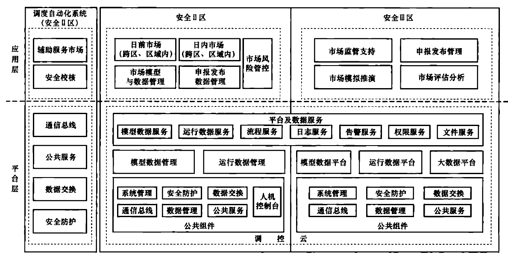
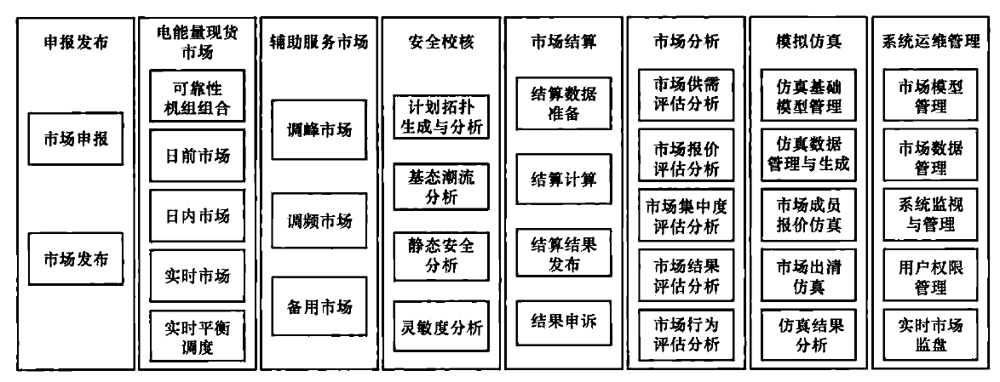
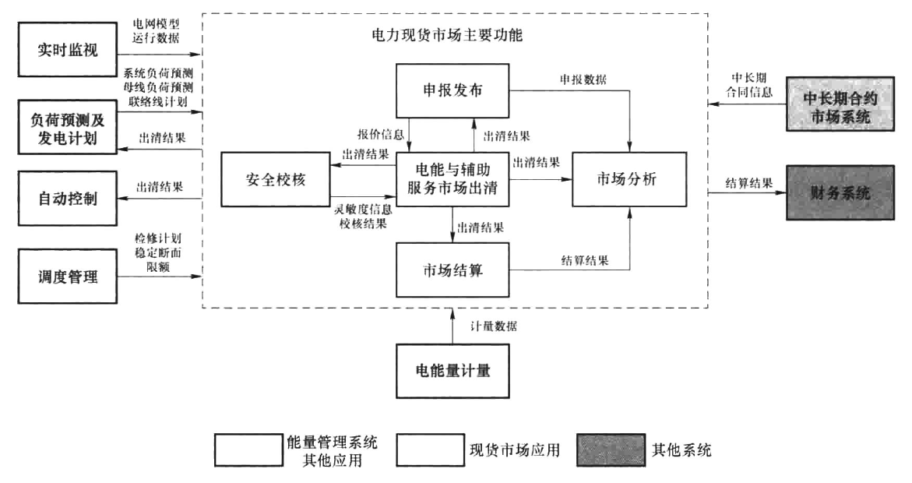

实现两地系统互为主备和并列运行。
21.1.2 省间电力现货市场技术支持系统架构
省间电力现货市场技术支持系统（以下简称省间现货系统）采用云架构设计，将省间现货系统主要应用和数据集中部署，提升系统建设经济性和数据交互效率；辅助服务市场应用分散部署，适应各区域的差异性。
省间现货系统基础平台基于调控云建设。调控云公共资源组件为省间现货系统提供数据管理、通信总线、公共服务、系统管理、数据交换以及安全防护支撑；模型数据平台提供电网基础模型，并支持市场对象模型扩展，实现市场模型数据的标准化建模，运行数据平台提供电网运行数据，并支持市场申报发布数据集中管理，通过标准化的模型数据服务和运行数据服务接口，为省间现货系统提供模型、数据支撑。应用层复用调度自动化系统的安全校核应用，新增市场模型与数据管理、申报发布数据管理、日前市场、日内市场、市场风险管控、申报发布管理、市场评估分析、市场模拟推演、市场监管支持功能，省间现货系统总体架构如图21-2所示。

图21-2 省间现货系统总体架构
21.2 应用功能
电力现货市场技术支持系统应用功能主要包括申报发布、电能量现货市场、辅助服务市场、安全校核、市场结算、市场分析、模拟仿真、系统运维管理等，每个应用功能中又包括了若干功能模块，如图21-3所示。应用功能之间通过平台数据存储实现基础模型与数据的共享，利用平台的通信总线实现功能集成与服务调用。

图21-3 电力现货市场技术支持核心应用功能结构图
21.2.1 申报发布
包括市场申报和市场发布两个部分，市场申报用于市场成员进行市场报价和运行信息申报，市场发布根据市场披露原则向市场成员发布市场运营及出清结果信息，包括事前信息发布和事后信息发布。
21.2.2 电能量现货市场
主要用于开展日前、日内、实时市场交易。日前市场功能支持在运行日前一天（D-1日）进行的决定运行日（D日）机组组合状态、机组出力计划、机组中标价格、中标负荷及负荷中标价格的电能量市场，以安全约束机组组合（SCUC）及安全约束经济调度（SCED）优化出清。日内市场功能支撑形成日内调度计划和可快速启停机组开停机决策，每15min滚动计算未来30min至未来多小时的快速启停机组启停计划、机组出力计划及价格。实时市场功能根据电网当前运行状态、最新系统负荷预测和实时市场报价（可采用日前封存报价），在日前与日内滚动机组组合基础上，采用SCED，每15min或5min滚动计算未来15min～2h的机组出力计划及价格。
21.2.3 辅助服务市场
主要用于支撑独立开展的调峰、调频、备用等市场交易，包括辅助服务市场需求计算、市场出清、结果分析等功能。如果采用辅助服务市场与电能量市场联合出清，则辅助服务市场相关功能集成到电能量市场中。
21.2.4 市场分析
基于电力现货市场运营、电网运行、市场注册、市场成员行为记录等数据，从市场供需、市场报价、市场集中度、市场结果、市场行为等多方面及市场运营机构和市场成员等多对象对市场进行分析，通过量化指标评估电力现货市场运营状态。包括市场供需评估分析、市场报价评估分析、市场集中度评估分析、市场结果评估分析、市场行为评估
分析等模块。
21.2.5 市场结算
依赖于计量数据、市场报价数据、交易出清结果及执行结果等数据，根据市场结算规则开展电能量与辅助服务市场费用的清分计算，为最终的市场费用兑付提供结算依据。主要包括结算数据准备、结算计算、结算结果发布、结果申诉。
21.2.6 安全校核
利用电网模型、电网运行方式、检修计划及市场出清结果等信息形成计划断面潮流，进行基态潮流分析，当出现网络设备越限时，由市场出清算法根据越限设备及其灵敏度信息对出清结果进行调整直至无设备越限，确保出清结果满足物理可行性要求。包括计划拓扑生成与分析、基态潮流分析、灵敏度分析等模块。
21.2.7 模拟仿真
用于市场运营模拟与评估、运营技术验证、市场运营人员培训等，模拟推演不同的市场模式下市场成员报价决策及市场运营结果。
21.2.8 系统运维管理
为系统的平稳运行提供运行监视、诊断分析、故障处置、系统管理、权限管理等一系列自动化管控工具，提升系统运维自动化水平和运维效率。
21.3 硬件配置
电力现货市场技术支持系统在设计时通常是作为调度自动化系统一部分，复用调度自动化系统基础平台及部分基础软硬件。根据每个应用功能对计算资源与存储资源使用情况，服务器上部署对应的应用功能，为了增强系统可靠性，服务器采用主备双机模式，当主机出现故障时，备机立刻启动接管所有服务，避免单机故障引发系统停止运行的问题。
服务器应用部署情况如表21-1所示。
表21-1
服务器应用部署情况表
| 序号 | 硬件设备 | 主要部署应用功能 |
| AS1 | 日前市场应用服务器 | 部署市场模型与数据管理、申报发布数据管理、可靠性机组组合、日前市场应用功能 |
| AS2 | 日内市场应用服务器 | 部署日内市场应用功能 |
| AS3 | 实时市场应用服务器 | 部署实时市场应用功能 |
| AS4 | 辅助服务市场应用服务器 | 部署辅助服务市场应用功能 |
续表
| 序号 | 硬件设备 | 主要部署应用功能 |
| AS5 | 安全校核服务器 | 增加部署安全校核计算服务，提升计算性能 |
| AS6 | 日前出清计算服务器 | 增加部署日前出清计算服务，提升日前出清计算性能 |
| AS7 | 市场结算服务器 | 部署市场风险管控应用功能 |
| AS8 | 市场关系数据库服务器 | 部署现货市场子系统关系数据库软件 |
| AS9 | 市场分析服务器 | 部署市场评估分析应用功能 |
| AS10 | 模拟仿真应用服务器 | 部署市场模拟推演应用功能 |
| AS11 | 申报发布服务器 | 部署市场申报及市场发布应用功能 |
| AS12 | 模拟推演关系服务器 | 部署市场监管关系数据库软件 |
21.4 数据交互
电力现货市场技术支持系统数据交互分为内部主要应用功能之间的交互、与调度自动化系统的其他应用的数据交互、与外部系统数据交互三类，如图21-4所示。

图 21–4 电力现货市场技术支持系统数据交互图
21.4.1 应用功能内部数据交互
在市场出清前，电能与辅助服务市场出清应用功能从市场申报发布功能中获取市场主体申报的电能与辅助服务市场的报价信息、注册信息、运行限值、运行参数等，形成市场出清的模型、边界、约束等输入信息。在出清过程中，市场出清功能调用安全校核应用功能获取发电机组、负荷节点与输电断面、线路、变压器绕组等设备的灵敏度信息，形成的出清结果送安全校核功能进行出清结果的基态潮流分析，安全校核把重载、越限
等输电断面及设备反馈给市场出清功能，出清功能基于校核结果重新计算调整出清结果，市场出清与安全校核之间迭代反馈直至出清结果满足电网安全约束要求或人工干预中止出清。市场出清结束后，市场出清结果送市场申报发布功能向市场主体发布，送市场结算功能用于后续市场结算计算，送市场分析用于事后分析。在市场出清结果执行后，市场结算功能基于出清量价及计量数据进行市场结算。市场分析功能从市场结算、申报发布及市场出清等功能中获取市场结算信息、报价信息、出清结果信息开展市场全面分析。
21.4.2 与调度自动化系统其他应用数据交互
作为调度自动化系统组成部分，电力现货市场应用功能与能量管理系统其他应用存在大量数据交互。电力现货市场应用从实时监视应用获取电网物理模型、电网实时运行数据、电网历史运行数据等，从调度管理应用获取发输变电检修计划、稳定断面限额信息，从计划市场类负荷预测及发电计划等应用中获取系统负荷预测、母线负荷预测、联络线计划、机组固定出力、新能源预测等信息，从电能量计量应用获取发电机组实际上网电量用于后续市场结算。电力现货市场出清结果送自动控制应用于调度执行，送计划市场类应用中发电计划编制功能用于最终发电计划的编制。
21.4.3 省间现货系统数据交互概述
省间现货系统提供与调度计划、安全校核等调度自动化系统相关应用之间的数据交互接口，提供与全国统一电力市场交易平台等外部系统之间的数据交换接口，实现横向集成。省间现货系统提供国调中心侧、网调侧和省调侧的数据交换接口，实现纵向贯通。
省间电力现货市场边界数据由市场模型与数据管理应用进行校验与预处理，市场报价数据经申报发布数据管理应用进行校验和审核确认，确认后的市场报价、市场边界及市场模型数据发送给市场出清环节作为市场出清计算输入的模型和数据，市场出清包括日前市场、日内市场等核心应用功能，主要完成不同周期、不同交易品种的市场出清计算，市场出清计算与安全校核迭代调整出清结果，确保结果的物理可执行性。同时，各类市场运营数据会进入到市场风险管控、市场评估分析、市场监管支持、市场模拟推演等应用，市场风险管控应用基于市场运营数据开展风险识别与管控，市场评估分析应用基于市场运营数据开展事后分析，市场监管支持应用基于市场运营数据开展市场监管，模拟推演应用基于历史算例开展事后反演计算，最终市场发布信息经过市场申报发布数据管理审核后向统一电力交易平台等系统输出。
21.4.4 省间与省内系统数据交互
1. 信息公告
（1）国调中心编制满足安全校核的跨区联络线预计划，基于现有的调度计划功能数据交互格式下发至网调，以消息总线方式将跨区联络线预计划、输电能力和限额等数据由国调中心发送至现货云。
（2）网调编制满足安全校核的省间联络线预计划，基于现有的调度计划功能数据交互
格式下发至省调，以消息总线方式将省间联络线预计划、输电能力和限额等数据由网调发送至现货云。
（3）现货云申报发布数据管理应用将跨区跨省联络线预计划、输电能力和限额等数据组织管理，发送至调控云以及电力市场交易平台（省间功能）。
2. 数据申报
（1）电力市场交易平台（省间功能）将加密的国调中心、网调直调机组申报数据发送至现货云。
（2）国调中心、各网调通过现货云申报发布数据管理功能对调度管辖范围内的直调机组申报数据校验校核调整。
（3）各省调按调度管辖范围从电力市场交易平台（省内功能）接收各市场主体的申报信息，并对申报数据进行校验校核调整。
（4）省调将校验校核的最终申报数据上传至现货云。
3. 电力现货市场出清
（1）国调中心、网调在现货云上进行电力现货市场出清，将该出清结果发送至国调中心/网调/省调，并发送至调控云。
（2）国调中心、网调在发电计划应用编制包含跨区电力现货市场出清结果的跨区跨省联络线计划。
4. 信息披露
（1）调控云信息披露管理功能将审核后的分省分交易节点出清结果及直调机组出清结果发送至电力市场交易平台（省间功能）。
（2）省调将调度管辖范围分解后的各市场主体中标结果发送至电力市场交易平台（省内功能）。
21.5 电力现货市场技术支持系统与能量管理系统的关系
电力现货市场技术支持系统与能量管理系统都是调度自动化系统的组成部分，能量管理系统是实现电网状态监视、分析、控制、计划和事故处理的最主要技术支撑，是保障电网安全和经济运行的重要技术手段。与现货市场运营相关的功能主要包括实时监视、自动控制、分析校核、评估分析、计划市场、培训仿真、调度管理、数据交换等功能。
能量管理系统通过厂站端、用户端等信息采集设备实时采集电网、发电、用户运行数据，通过专用数据通信网络上送到电网调度机构侧主站系统，电网调度机构主站系统对数据进行处理与计算，实时监视电网频率、电压、断面潮流、联络线交换功率、设备状态、系统备用以及系统发电与负荷供需平衡情况，对电网运行状态进行预警、分析与处理，通过系统实现发电控制、潮流调整、负荷转供、无功调节，保障电网运行在合理的安全状态；若电网发生事故，则要监视事故后电网运行状态，并实施紧急和恢复控制，防止连锁性故障事件的发生。
电力现货市场应用功能与能量管理系统关系密切，电力现货市场应用功能需要从中获取电网物理模型、实时运行数据、计划预测类数据等，以便在开展市场出清计算时能够
充分考虑电网物理运行条件，保证市场交易结果在满足电网安全运行要求下实现市场经济效益最大化，电力现货市场应用需要把各类市场交易结果发送给能量管理系统开展安全校核。随着市场交易时间不断逼近物理交割时间，电力现货市场应用从实时监视应用中获取最新电网运行状态，不断调整市场出清结果，分别形成年、月、日、日内、实时等时序递进、准确度不断提升的交易结果，并最终通过自动发电控制应用下发给发电机组执行。电网执行情况又通过调度自动化系统实时反馈给电力现货市场应用，市场成员根据电网及市场动态调整其市场行为，形成“市场决策-调度执行-运行反馈”循环流程。事后，电力现货市场应用从计量应用中获取计量数据完成市场结算。
电力现货市场在日前、日内层面充分考虑电网安全运行及市场经济运营，市场出清结果直接影响了次日机组开停安排、电力电量平衡及实时发电调度，在出清计算时，需要充分考虑电网安全约束、机组运行约束等，保证出清结果满足电网调度运行要求。日前市场及实时市场出清结果正确性直接影响了电网安全、可靠运行，且电力现货市场（尤其实时市场）对计算的时效性要求非常高，需要在分钟级把出清结果下发给自动发电控制软件执行，这也是电力现货市场系统与能量管理系统都构建在调度自动化系统中并作为相互补充一部分的原因，利用统一平台实现基础模型与数据高效共享，全面提升电力现货市场运营效率，实现电力现货市场与电网实时调度控制安全、可靠闭环控制。
21.6 本章小结
本章首先介绍电力现货市场技术支持系统总体架构，阐述电力现货市场技术支持系统总业务流程；其次详细介绍各应用功能所包含的模块及作用；再介绍电力现货市场技术支持系统典型硬件配置以及服务器应用部署情况；然后从电力现货市场技术支持系统应用功能内部、与调度自动化系统其他应用间、省间省内系统间三方面详细阐述数据交互流程；最后阐述电力现货市场技术支持系统与能量管理系统的关系。
第22章
现货及辅助服务市场申报发布
现货及辅助服务市场申报发布模块均与信息外网相连，申报发布子系统涵盖市场成员注册、市场申报、信息发布三大部分，该子系统面向市场主体，一般包括发电企业、电力用户、售电公司、电网企业、独立辅助服务提供者等。其中，本章重点介绍的市场申报，包括电力现货市场及辅助服务市场申报；信息发布，主要是调控中心信息发布和电网公司信息发布中与电力现货市场相关的部分，具体模块结构图如图22-1所示。
图22-1 申报发布模块结构图
22.1 市场申报
本节的市场申报环节包括电力现货市场申报和辅助服务市场申报。其中，电力现货市场申报包括日前市场申报、实时市场申报；辅助服务市场申报包括调频申报和备用申报等，市场申报模块结构图如图22-2所示，系统操作界面示意图如图22-3所示。